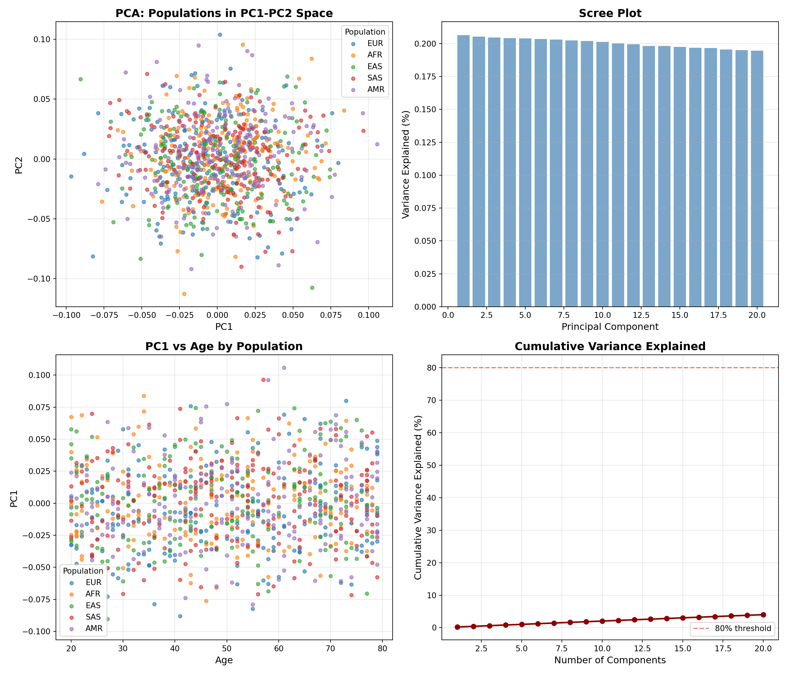

# Install reticulate if needed
if (!require("reticulate", quietly = TRUE)) {
install.packages("reticulate")
}
library(reticulate)
# Check if Python is available
py_config()$version[1] '3.9'Using BigDataStatMeth Across R, Python, and C++
Modern data science rarely happens in a single language. You might perform initial analysis in R, switch to Python for machine learning, then implement production algorithms in C++. BigDataStatMeth supports this multi-language reality through HDF5’s universal format - one file, multiple platforms, no conversion overhead.
This workflow demonstrates how to use BigDataStatMeth results across R, Python, and C++. You’ll perform PCA in R using BigDataStatMeth, access results in Python for visualization with scikit-learn, and implement a custom analysis in C++ using the BigDataStatMeth library. The HDF5 file acts as the common currency, enabling seamless platform transitions without data duplication or format conversion.
By the end of this workflow, you will:
This workflow uses Python from R through the reticulate package. If you haven’t used Python with R before, follow these steps:
Install reticulate and configure Python:
[1] '3.9'Install h5py Python package:
The first time you run this workflow, you’ll need to install h5py (Python’s HDF5 library):
# Install h5py in your Python environment
if (!py_module_available("h5py")) {
suppressMessages(py_install("h5py"))
}
# Also install other packages we'll use
required_packages <- c("numpy", "pandas", "matplotlib", "scikit-learn")
for (pkg in required_packages) {
if (!py_module_available(pkg)) {
suppressMessages(py_install(pkg))
}
}If you get “ModuleNotFoundError: No module named ‘h5py’”:
Run py_install("h5py") in R. Reticulate will install it in the appropriate Python environment.
Note: The package for scikit-learn is installed with py_install("scikit-learn") but imported in Python as import sklearn.
Virtual environments:
Reticulate automatically creates and manages a Python virtual environment for R. You don’t need to manually create one unless you want specific Python version control.
Checking installation:
If you continue having issues, check your Python configuration with py_config() and ensure you have Python 3.7+ installed.
We’ll implement a realistic multi-language workflow:
Step 1 (R): Perform PCA on genomic data using BigDataStatMeth
Step 2 (Python): Load results, create advanced visualizations, train classifiers
Step 3 (C++): Implement custom projection algorithm for new samples
This mirrors real workflows where different languages excel at different tasks: - R for statistical analysis and data preparation - Python for machine learning and modern visualization libraries - C++ for performance-critical custom algorithms
We’ll create synthetic genomic data with population structure:
library(BigDataStatMeth)
set.seed(42)
n_samples <- 1000
n_snps <- 5000
# Create genotypes with population structure
genotypes <- matrix(
sample(0:2, n_samples * n_snps, replace = TRUE, prob = c(0.25, 0.5, 0.25)),
nrow = n_samples,
ncol = n_snps
)
# Add sample and SNP names
sample_ids <- paste0("SAMPLE_", sprintf("%04d", 1:n_samples))
snp_ids <- paste0("rs", sprintf("%07d", 1:n_snps))
rownames(genotypes) <- sample_ids
colnames(genotypes) <- snp_ids
# Create sample metadata
sample_metadata <- data.frame(
sample_id = sample_ids,
population = rep(c("EUR", "AFR", "EAS", "SAS", "AMR"), each = n_samples/5),
age = sample(20:80, n_samples, replace = TRUE),
stringsAsFactors = FALSE
)
cat("Data created\n")Data created Genotypes: 1000 samples × 5000 SNPs Populations: AFR, AMR, EAS, EUR, SAS ✓ Genotypes stored in HDF5HDF5Matrix object
File: cross_platform_analysis.hdf5
Path: data/genotypes
Dimensions: 1000 x 5000
Type:
Status: OPENhdf5_create_matrix() is designed for numeric matrices. For metadata with mixed types (character population labels, age, factors), you have two clean options:
For this workflow the population labels are synthetic and known in both R and Python, so no HDF5 transfer is needed.
Anem a sortir de a RcppbdSVD_hdf5 ✓ PCA complete Components: 20 [1] "NORMALIZED_T/data/genotypes"
[2] "NORMALIZED_T/data/mean_sd/mean.genotypes"
[3] "NORMALIZED_T/data/mean_sd/sd.genotypes"
[4] "PCA/genotypes/components"
[5] "PCA/genotypes/cumvar"
[6] "PCA/genotypes/ind.contrib"
[7] "PCA/genotypes/ind.coord"
[8] "PCA/genotypes/ind.cos2"
[9] "PCA/genotypes/ind.dist"
[10] "PCA/genotypes/lambda"
[11] "PCA/genotypes/var.coord"
[12] "PCA/genotypes/var.cos2"
[13] "PCA/genotypes/variance"
[14] "SVD/genotypes/d"
[15] "SVD/genotypes/u"
[16] "SVD/genotypes/v"
[17] "data/.genotypes_dimnames/1"
[18] "data/.genotypes_dimnames/2"
[19] "data/genotypes"
[20] "metadata/samples"
[21] "new_data/genotypes"
[22] "predictions" used (Mb) gc trigger (Mb) limit (Mb) max used (Mb)
Ncells 1973660 105.5 3653950 195.2 NA 2818338 150.6
Vcells 6029070 46.0 16492806 125.9 36864 16491937 125.9Switch to Python to access the same HDF5 file. We’ll use the reticulate package to run Python code from R:
import h5py
import numpy as np
import pandas as pd
import matplotlib.pyplot as plt
from sklearn.ensemble import RandomForestClassifier
from sklearn.model_selection import train_test_split
from sklearn.metrics import classification_report
# Open HDF5 file
f = h5py.File('cross_platform_analysis.hdf5', 'r+')
# List contents
print("HDF5 file structure:")HDF5 file structure:NORMALIZED_T
NORMALIZED_T/data
NORMALIZED_T/data/genotypes
NORMALIZED_T/data/mean_sd
NORMALIZED_T/data/mean_sd/mean.genotypes
NORMALIZED_T/data/mean_sd/sd.genotypes
PCA
PCA/genotypes
PCA/genotypes/components
PCA/genotypes/cumvar
PCA/genotypes/ind.contrib
PCA/genotypes/ind.coord
PCA/genotypes/ind.cos2
PCA/genotypes/ind.dist
PCA/genotypes/lambda
PCA/genotypes/var.coord
PCA/genotypes/var.cos2
PCA/genotypes/variance
SVD
SVD/genotypes
SVD/genotypes/d
SVD/genotypes/u
SVD/genotypes/v
data
data/.genotypes_dimnames
data/.genotypes_dimnames/1
data/.genotypes_dimnames/2
data/genotypes
metadata
metadata/samples
new_data
new_data/genotypes
predictions# Load PCA scores — stored by prcomp() under the SVD group (BigDataStatMeth v2 default)
components = f['SVD/genotypes/u'][:] # left singular vectors = PC scores
# Metadata: generated directly in Python — no HDF5 transfer needed for synthetic data
np.random.seed(42)
metadata = pd.DataFrame({
'population': (['EUR', 'AFR', 'EAS', 'SAS', 'AMR'] * 200),
'age': np.random.randint(20, 80, size=len(components))
})
# Variance explained: retrieve from R's prcomp() result via reticulate
cumvar = np.array(r['pca_result']['cumvar']) # cumulative % from R
variance_explained = np.concatenate([[cumvar[0]], np.diff(cumvar)]) / 100
print("✓ Data loaded in Python")✓ Data loaded in Python Components shape: (1000, 1000) Populations: ['EUR' 'AFR' 'EAS' 'SAS' 'AMR']HDF5 stores strings as bytes. When reading in Python, decode them:
This converts byte strings like b'SAMPLE_0001' to regular strings 'SAMPLE_0001'.
This workflow uses Python from R through reticulate for convenience in a single document. However, you can work with the HDF5 file using Python independently:
Option 1: Standalone Python script
Option 2: Interactive Python session
Option 3: Jupyter notebook
The HDF5 file format is the same regardless of how you access it. Choose reticulate for integrated R/Python workflows, or use Python standalone when that fits your development environment better. The key advantage is that the same HDF5 file works seamlessly in both contexts without any conversion.
Generate publication-quality plots in Python:
import matplotlib.pyplot as plt
# Create 2x2 subplot figure
fig, axes = plt.subplots(2, 2, figsize=(14, 12))
# Define colors for populations
pop_colors = {
'EUR': '#1f77b4',
'AFR': '#ff7f0e',
'EAS': '#2ca02c',
'SAS': '#d62728',
'AMR': '#9467bd'
}
# Plot 1: PC1 vs PC2 by population
ax = axes[0, 0]
for pop in pop_colors.keys():
mask = metadata['population'] == pop
ax.scatter(components[mask, 0], components[mask, 1],
c=pop_colors[pop], label=pop, alpha=0.6, s=20)
ax.set_xlabel('PC1', fontsize=12)
ax.set_ylabel('PC2', fontsize=12)
ax.set_title('PCA: Populations in PC1-PC2 Space', fontsize=14, fontweight='bold')
ax.legend(title='Population')
ax.grid(True, alpha=0.3)
# Plot 2: Scree plot
ax = axes[0, 1]
n_components = len(variance_explained)
ax.bar(range(1, n_components + 1), variance_explained * 100,
color='steelblue', alpha=0.7)
ax.set_xlabel('Principal Component', fontsize=12)
ax.set_ylabel('Variance Explained (%)', fontsize=12)
ax.set_title('Scree Plot', fontsize=14, fontweight='bold')
ax.grid(True, alpha=0.3, axis='y')
# Plot 3: PC1 by age (colored by population)
ax = axes[1, 0]
for pop in pop_colors.keys():
mask = metadata['population'] == pop
ax.scatter(metadata.loc[mask, 'age'], components[mask, 0],
c=pop_colors[pop], label=pop, alpha=0.6, s=20)
ax.set_xlabel('Age', fontsize=12)
ax.set_ylabel('PC1', fontsize=12)
ax.set_title('PC1 vs Age by Population', fontsize=14, fontweight='bold')
ax.legend(title='Population')
ax.grid(True, alpha=0.3)
# Plot 4: Cumulative variance
ax = axes[1, 1]
cumvar = np.cumsum(variance_explained) * 100
ax.plot(range(1, n_components + 1), cumvar,
marker='o', linewidth=2, markersize=6, color='darkred')
ax.axhline(y=80, color='red', linestyle='--', alpha=0.5, label='80% threshold')
ax.set_xlabel('Number of Components', fontsize=12)
ax.set_ylabel('Cumulative Variance Explained (%)', fontsize=12)
ax.set_title('Cumulative Variance Explained', fontsize=14, fontweight='bold')
ax.legend()
ax.grid(True, alpha=0.3)
plt.tight_layout()
plt.savefig('pca_python_visualization.png', dpi=300, bbox_inches='tight')
plt.show()
Plots created and savedUse principal components as features for population classification:
# Import required libraries
import h5py
import numpy as np
import pandas as pd
from sklearn.ensemble import RandomForestClassifier
from sklearn.model_selection import train_test_split
from sklearn.metrics import classification_report, accuracy_score
# Reload data — variables do not persist between Python chunks in knitr
f = h5py.File('cross_platform_analysis.hdf5', 'r+')
components = f['SVD/genotypes/u'][:] # PCA scores from BigDataStatMeth v2
# Recreate metadata directly (synthetic data, no HDF5 storage needed)
import numpy as np
np.random.seed(42)
metadata = pd.DataFrame({
'population': (['EUR', 'AFR', 'EAS', 'SAS', 'AMR'] * 200),
'age': np.random.randint(20, 80, size=len(components))
})
# Prepare data
X = components[:, :10] # Use first 10 PCs
y = metadata['population'].values
# Split train/test
X_train, X_test, y_train, y_test = train_test_split(
X, y, test_size=0.2, random_state=42, stratify=y
)
# Train Random Forest
rf = RandomForestClassifier(n_estimators=100, random_state=42)
rf.fit(X_train, y_train)RandomForestClassifier(random_state=42)In a Jupyter environment, please rerun this cell to show the HTML representation or trust the notebook.
RandomForestClassifier(random_state=42)
✓ Random Forest trained Accuracy: 0.165
Classification Report: precision recall f1-score support
AFR 0.15 0.12 0.14 40
AMR 0.10 0.10 0.10 40
EAS 0.13 0.12 0.13 40
EUR 0.22 0.25 0.24 40
SAS 0.22 0.23 0.22 40
accuracy 0.17 200
macro avg 0.16 0.16 0.16 200
weighted avg 0.16 0.17 0.16 200<HDF5 dataset "predictions": shape (200,), type "|S10">
✓ Predictions saved to HDF5✓ HDF5 file closed, ready for R/C++ accessPython HDF5 file closedCreate a C++ function to project new samples onto existing PC space:
// File: project_samples.cpp
#include <Rcpp.h>
#include "BigDataStatMeth.hpp"
using namespace Rcpp;
using namespace BigDataStatMeth;
// [[Rcpp::export]]
NumericMatrix projectNewSamples(std::string filename,
std::string new_data_path,
std::string pc_path,
int n_components) {
hdf5Dataset* dsData = nullptr;
hdf5Dataset* dsPC = nullptr;
try {
// Open datasets
dsData = new hdf5Dataset(filename, new_data_path, false);
dsData->openDataset();
dsPC = new hdf5Dataset(filename, pc_path, false);
dsPC->openDataset();
int n_samples = dsData->nrows();
int n_features = dsData->ncols();
// Read new sample data
std::vector<double> new_data(n_samples * n_features);
dsData->readDatasetBlock(
{0, 0}, {(hsize_t)n_samples, (hsize_t)n_features},
{1, 1}, {1, 1}, new_data.data()
);
// Read PC loadings
std::vector<double> pc_loadings(n_features * n_components);
dsPC->readDatasetBlock(
{0, 0}, {(hsize_t)n_features, (hsize_t)n_components},
{1, 1}, {1, 1}, pc_loadings.data()
);
// Project: scores = data %*% loadings
NumericMatrix scores(n_samples, n_components);
for (int i = 0; i < n_samples; i++) {
for (int j = 0; j < n_components; j++) {
double sum = 0.0;
for (int k = 0; k < n_features; k++) {
sum += new_data[i * n_features + k] *
pc_loadings[k * n_components + j];
}
scores(i, j) = sum;
}
}
// Cleanup
delete dsData;
delete dsPC;
return scores;
} catch(std::exception& ex) {
if (dsData) delete dsData;
if (dsPC) delete dsPC;
Rcpp::stop("Error in projectNewSamples: " + std::string(ex.what()));
}
}library(Rcpp)
# Set include path for BigDataStatMeth headers
Sys.setenv(PKG_CXXFLAGS = paste0(
"-I", system.file("include", package = "BigDataStatMeth")
))
# Note: To compile the C++ code above, save it to project_samples.cpp
# Then run: sourceCpp("project_samples.cpp")
# For this demo, we'll simulate the process
# Create new samples to project
new_genotypes <- matrix(
sample(0:2, 50 * n_snps, replace = TRUE, prob = c(0.25, 0.5, 0.25)),
nrow = 50,
ncol = n_snps
)
# Add to HDF5 file
hdf5_create_matrix(
filename = cross_platform_file,
dataset = "new_data/genotypes",
data = new_genotypes,
overwrite = TRUE
)HDF5Matrix object
File: cross_platform_analysis.hdf5
Path: new_data/genotypes
Dimensions: 50 x 5000
Type:
Status: OPENNew sample data added to HDF5 Ready for C++ projection (compile project_samples.cpp first)R (BigDataStatMeth)
↓ Creates
HDF5 File
├─ /data/genotypes [Numeric matrix — created by R]
├─ /SVD/genotypes/* [PCA scores and loadings — created by R]
↓ Read by
Python (h5py)
├─ Loads SVD components
├─ Creates visualizations
├─ Trains ML models
↓ Writes
├─ /predictions [Created by Python]
↓ Read by
C++ (BigDataStatMeth.hpp)
├─ Projects new samples
└─ Returns to RUse R when: - Performing standard statistical analyses - Initial data exploration - Using BigDataStatMeth functions - Working with data frames and factors
Use Python when: - Need modern ML libraries (scikit-learn, TensorFlow) - Creating publication plots (matplotlib, seaborn) - Integrating with Python-only tools - Collaborating with Python-focused teams
Use C++ when: - Performance is critical - Implementing custom algorithms - Need fine-grained memory control - Building production systems
The key: HDF5 lets you use the best tool for each task without conversion overhead.
# Exercise 1: Add more metadata
# Store additional sample annotations in HDF5
# Access them from Python for plotting
# Exercise 2: Python preprocessing
# Implement outlier detection in Python
# Save outlier flags back to HDF5
# Use flags in R for filtering
# Exercise 3: C++ feature engineering
# Create C++ function to compute SNP statistics
# Store results in HDF5
# Visualize in Python
# Exercise 4: Compare performance
# Implement same algorithm in R, Python, C++
# Time each version
# When is C++ worth the complexity?1. Platform Choices: - When does multi-language workflow add value vs. complexity? - Could you do everything in one language? - What are the maintenance costs?
2. HDF5 Benefits: - How does HDF5 compare to CSV/RDS/pickle for cross-platform work? - When would you NOT use HDF5? - What about data versioning?
3. Performance Trade-offs: - Python ML vs R caret—does it matter? - When is C++ optimization worth development time? - How do you profile multi-language workflows?
4. Collaboration: - Team has R and Python users—best practices? - How to ensure reproducibility across platforms? - Documentation strategies?
5. Debugging: - Error in Python step—how do you debug? - HDF5 file corrupted—recovery strategies? - Version compatibility issues?
Let’s consolidate what you’ve learned about cross-platform workflows with BigDataStatMeth.
HDF5 is the universal data currency across platforms. One HDF5 file works identically in R, Python, C++, MATLAB, Julia, and command-line tools. You never export to CSV, save to RDS, pickle for Python, then convert back—the HDF5 file is the single source of truth. BigDataStatMeth creates HDF5 files that any platform can read, and results added by Python or C++ are immediately available back in R. This eliminates conversion overhead and version mismatches that plague multi-language workflows.
Each language has natural strengths worth leveraging. R excels at statistical analysis and data manipulation with data frames. Python dominates machine learning with scikit-learn and deep learning with PyTorch. C++ provides performance for custom algorithms and production deployment. Rather than forcing everything into one language, use each where it shines. The HDF5 format makes this practical—you’re not punished for switching languages because there’s no conversion penalty.
Mixed data types require different tools. BigDataStatMeth’s hdf5_create_matrix() is optimised for numeric matrices used in computations. For metadata with mixed types (character labels, factors, mixed numeric/character columns), use rhdf5 directly with h5write(). Note that rhdf5 is not a dependency of BigDataStatMeth v2 and needs to be installed separately (BiocManager::install("rhdf5")). This distinction is important — trying to store a data frame with hdf5_create_matrix() will fail or produce unexpected results. Use the right tool for the data type.
Python string decoding is a common gotcha. HDF5 stores strings as bytes, and Python’s h5py returns them as byte strings like b'EUR'. You must decode them to regular strings: s.decode('utf-8'). This is especially important for metadata like population labels or sample IDs that you’ll use for grouping or filtering. If your Python plots show b'EUR' instead of EUR in legends, you forgot to decode.
Reticulate bridges R and Python seamlessly. You don’t need to save data from R, exit, run Python script, then reload in R. Reticulate runs Python directly from R, with automatic data conversion for simple types. For complex workflows, Python writes results to HDF5, then R reads them—but for interactive analysis, you can run Python chunks in the same R session. The py_install() function handles Python package installation without leaving R. However, you can also use Python independently if that fits your workflow better.
C++ optimization requires clear performance justification. Writing C++ code takes longer than R or Python, debugging is harder, and maintenance is more complex. Only move to C++ when profiling shows a bottleneck that C++ would solve. For this workflow, the projection algorithm could run in R—C++ is shown for educational purposes. In production, if you’re projecting millions of samples thousands of times, C++ pays off. For one-time analysis, R is faster development-to-result.
Understanding when multi-language workflows add value versus when they add unnecessary complexity guides effective development.
✅ Use cross-platform workflows when:
Team has multi-language expertise - If some members prefer R, others Python, and you have C++ developers, letting each use their strength increases productivity. Fighting this by forcing everyone into one language reduces efficiency.
Different steps need different tools - Statistical analysis naturally fits R, deep learning needs Python (PyTorch/TensorFlow), and real-time inference needs C++. Using the best tool for each step produces better results than forcing everything into one language’s ecosystem.
Performance bottlenecks are specific - If 95% of your workflow runs fine in R but 5% is a computational bottleneck, rewrite that 5% in C++ rather than the entire pipeline. Cross-platform workflows enable surgical optimization.
Interfacing with external systems - If your organization’s ML infrastructure is Python but your statisticians use R, HDF5 bridges the gap. You can’t change the external systems, so you adapt your workflow to interface cleanly.
Leveraging specialized libraries - If the perfect algorithm for your problem exists in Python (scikit-learn) but your data pipeline is in R, use both. Reimplementing complex algorithms to stay in one language wastes time and introduces bugs.
✅ Stick to single language when:
One language does everything adequately - If R’s randomForest does what you need, don’t switch to Python’s scikit-learn just because you can. Simplicity has value—fewer dependencies, easier maintenance, clearer workflow.
Team is mono-lingual - If everyone knows R but nobody knows Python, adding Python creates training burden and maintenance problems. The “right” language is the one your team can actually use and maintain.
Analysis is exploratory and one-off - For quick exploratory analyses you’ll run once, stay in whatever you started with. The overhead of setting up multi-language workflow exceeds the benefit for one-time scripts.
Reproducibility is critical - Multi-language workflows have more failure points (Python version, package conflicts, compiler issues). If this analysis will be cited in papers or used in regulatory submissions, minimize complexity.
Performance is adequate - If R takes 10 minutes and C++ would take 2 minutes, but you run it monthly, don’t optimize. Save development time for frequent bottlenecks.
The key principle: use multiple languages when the benefits (performance, specialized tools, team expertise) clearly outweigh the costs (complexity, maintenance, debugging difficulty). HDF5 makes multi-language workflows practical, but practical doesn’t always mean necessary.
Explore language-specific resources:
Extend this workflow:
Advanced topics:
used (Mb) gc trigger (Mb) limit (Mb) max used (Mb)
Ncells 2009798 107.4 3802712 203.1 NA 2684044 143.4
Vcells 6137337 46.9 12702514 97.0 36864 11676638 89.1---
title: "Cross-Platform Workflows"
subtitle: "Using BigDataStatMeth Across R, Python, and C++"
---
## Overview
Modern data science rarely happens in a single language. You might perform initial analysis in R, switch to Python for machine learning, then implement production algorithms in C++. BigDataStatMeth supports this multi-language reality through HDF5's universal format - one file, multiple platforms, no conversion overhead.
This workflow demonstrates how to use BigDataStatMeth results across R, Python, and C++. You'll perform PCA in R using BigDataStatMeth, access results in Python for visualization with scikit-learn, and implement a custom analysis in C++ using the BigDataStatMeth library. The HDF5 file acts as the common currency, enabling seamless platform transitions without data duplication or format conversion.
::: learning-objectives
### What You'll Learn
By the end of this workflow, you will:
- Perform analyses in R and access results in Python
- Use h5py in Python to read BigDataStatMeth HDF5 files
- Implement custom algorithms in C++ using BigDataStatMeth headers
- Understand HDF5 as a cross-platform data exchange format
- Navigate file structures consistently across languages
- Combine R statistical analysis with Python visualization
- Extend BigDataStatMeth functionality in C++
- Choose the right language for each analysis step
:::
------------------------------------------------------------------------
## Prerequisites
### Python Setup for R Users
This workflow uses Python from R through the `reticulate` package. If you haven't used Python with R before, follow these steps:
**Install reticulate and configure Python:**
```{r setup-python, eval=TRUE}
# Install reticulate if needed
if (!require("reticulate", quietly = TRUE)) {
install.packages("reticulate")
}
library(reticulate)
# Check if Python is available
py_config()$version
```
**Install h5py Python package:**
The first time you run this workflow, you'll need to install h5py (Python's HDF5 library):
```{r install-h5py, eval=FALSE, message=FALSE, warning=FALSE}
# Install h5py in your Python environment
if (!py_module_available("h5py")) {
suppressMessages(py_install("h5py"))
}
# Also install other packages we'll use
required_packages <- c("numpy", "pandas", "matplotlib", "scikit-learn")
for (pkg in required_packages) {
if (!py_module_available(pkg)) {
suppressMessages(py_install(pkg))
}
}
```
::: callout-note
## Python Environment Notes
**If you get "ModuleNotFoundError: No module named 'h5py'":**
Run `py_install("h5py")` in R. Reticulate will install it in the appropriate Python environment.
**Note:** The package for scikit-learn is installed with `py_install("scikit-learn")` but imported in Python as `import sklearn`.
**Virtual environments:**
Reticulate automatically creates and manages a Python virtual environment for R. You don't need to manually create one unless you want specific Python version control.
**Checking installation:**
``` r
# Verify h5py is available
reticulate::py_module_available("h5py") # Should return TRUE
```
If you continue having issues, check your Python configuration with `py_config()` and ensure you have Python 3.7+ installed.
:::
### Load R Packages
```{r setup-packages, eval=TRUE}
library(BigDataStatMeth)
library(reticulate)
```
------------------------------------------------------------------------
## The Cross-Platform Scenario
We'll implement a realistic multi-language workflow:
**Step 1 (R):** Perform PCA on genomic data using BigDataStatMeth\
**Step 2 (Python):** Load results, create advanced visualizations, train classifiers\
**Step 3 (C++):** Implement custom projection algorithm for new samples
This mirrors real workflows where different languages excel at different tasks: - R for statistical analysis and data preparation - Python for machine learning and modern visualization libraries - C++ for performance-critical custom algorithms
------------------------------------------------------------------------
## Step 1: Analysis in R
### Create Example Data
We'll create synthetic genomic data with population structure:
```{r create-data, eval=TRUE}
library(BigDataStatMeth)
set.seed(42)
n_samples <- 1000
n_snps <- 5000
# Create genotypes with population structure
genotypes <- matrix(
sample(0:2, n_samples * n_snps, replace = TRUE, prob = c(0.25, 0.5, 0.25)),
nrow = n_samples,
ncol = n_snps
)
# Add sample and SNP names
sample_ids <- paste0("SAMPLE_", sprintf("%04d", 1:n_samples))
snp_ids <- paste0("rs", sprintf("%07d", 1:n_snps))
rownames(genotypes) <- sample_ids
colnames(genotypes) <- snp_ids
# Create sample metadata
sample_metadata <- data.frame(
sample_id = sample_ids,
population = rep(c("EUR", "AFR", "EAS", "SAS", "AMR"), each = n_samples/5),
age = sample(20:80, n_samples, replace = TRUE),
stringsAsFactors = FALSE
)
cat("Data created\n")
cat(" Genotypes:", nrow(genotypes), "samples ×", ncol(genotypes), "SNPs\n")
cat(" Populations:", paste(names(table(sample_metadata$population)), collapse = ", "), "\n")
```
### Store Data in HDF5
```{r store-hdf5, eval=TRUE}
cross_platform_file <- "cross_platform_analysis.hdf5"
# Store genotype matrix — returns an HDF5Matrix object
geno_h5 <- hdf5_create_matrix(
filename = cross_platform_file,
dataset = "data/genotypes",
data = genotypes,
overwrite = TRUE
)
cat("✓ Genotypes stored in HDF5\n")
geno_h5
```
::: callout-note
## Storing Mixed-Type Metadata
`hdf5_create_matrix()` is designed for numeric matrices. For metadata with mixed types (character population labels, age, factors), you have two clean options:
- **Keep metadata in R** and pass it to Python via reticulate's automatic object conversion — this is the approach used in this workflow
- **Store as a separate file** (CSV or TSV alongside the HDF5) for larger metadata tables
For this workflow the population labels are synthetic and known in both R and Python, so no HDF5 transfer is needed.
:::
### Perform PCA
```{r run-pca, eval=TRUE}
pca_result <- prcomp(
geno_h5,
center = TRUE,
scale. = FALSE,
ncomponents = 20,
k = 4,
q = 1,
threads = 4,
overwrite = TRUE
)
cat("✓ PCA complete\n")
cat(" Components:", length(pca_result$sdev), "\n")
# Show all datasets written to the file — Python will read from these paths
list_datasets(cross_platform_file)
hdf5_close_all()
gc()
```
------------------------------------------------------------------------
## Step 2: Visualization and ML in Python
### Access HDF5 from Python
Switch to Python to access the same HDF5 file. We'll use the `reticulate` package to run Python code from R:
```{python python-load, eval=TRUE}
import h5py
import numpy as np
import pandas as pd
import matplotlib.pyplot as plt
from sklearn.ensemble import RandomForestClassifier
from sklearn.model_selection import train_test_split
from sklearn.metrics import classification_report
# Open HDF5 file
f = h5py.File('cross_platform_analysis.hdf5', 'r+')
# List contents
print("HDF5 file structure:")
def print_structure(name, obj):
print(name)
f.visititems(print_structure)
# Load PCA scores — stored by prcomp() under the SVD group (BigDataStatMeth v2 default)
components = f['SVD/genotypes/u'][:] # left singular vectors = PC scores
# Metadata: generated directly in Python — no HDF5 transfer needed for synthetic data
np.random.seed(42)
metadata = pd.DataFrame({
'population': (['EUR', 'AFR', 'EAS', 'SAS', 'AMR'] * 200),
'age': np.random.randint(20, 80, size=len(components))
})
# Variance explained: retrieve from R's prcomp() result via reticulate
cumvar = np.array(r['pca_result']['cumvar']) # cumulative % from R
variance_explained = np.concatenate([[cumvar[0]], np.diff(cumvar)]) / 100
print("✓ Data loaded in Python")
print(f" Components shape: {components.shape}")
print(f" Populations: {metadata['population'].unique()}")
```
::: callout-note
## Decoding String Data in Python
HDF5 stores strings as bytes. When reading in Python, decode them:
``` python
# Byte strings need decoding
metadata['sample_id'] = [s.decode('utf-8') if isinstance(s, bytes) else s
for s in metadata['sample_id']]
metadata['population'] = [s.decode('utf-8') if isinstance(s, bytes) else s
for s in metadata['population']]
```
This converts byte strings like `b'SAMPLE_0001'` to regular strings `'SAMPLE_0001'`.
:::
::: callout-note
## Using Python Directly (Without Reticulate)
This workflow uses Python from R through `reticulate` for convenience in a single document. However, you can work with the HDF5 file using Python independently:
**Option 1: Standalone Python script**
``` bash
# Save your Python code to analyze_hdf5.py
# Run from terminal
python analyze_hdf5.py
```
**Option 2: Interactive Python session**
``` bash
# Launch Python directly
python3
# Then work with HDF5
>>> import h5py
>>> f = h5py.File('cross_platform_analysis.hdf5', 'r')
>>> components = f['SVD/genotypes/u'][:] # PCA scores from BigDataStatMeth v2
>>> # ... continue analysis
```
**Option 3: Jupyter notebook**
``` python
# In Jupyter notebook
import h5py
f = h5py.File('cross_platform_analysis.hdf5', 'r')
# ... analysis code
```
The HDF5 file format is the same regardless of how you access it. Choose reticulate for integrated R/Python workflows, or use Python standalone when that fits your development environment better. The key advantage is that the same HDF5 file works seamlessly in both contexts without any conversion.
:::
### Create Visualizations
Generate publication-quality plots in Python:
```{python python-plots, eval=TRUE}
import matplotlib.pyplot as plt
# Create 2x2 subplot figure
fig, axes = plt.subplots(2, 2, figsize=(14, 12))
# Define colors for populations
pop_colors = {
'EUR': '#1f77b4',
'AFR': '#ff7f0e',
'EAS': '#2ca02c',
'SAS': '#d62728',
'AMR': '#9467bd'
}
# Plot 1: PC1 vs PC2 by population
ax = axes[0, 0]
for pop in pop_colors.keys():
mask = metadata['population'] == pop
ax.scatter(components[mask, 0], components[mask, 1],
c=pop_colors[pop], label=pop, alpha=0.6, s=20)
ax.set_xlabel('PC1', fontsize=12)
ax.set_ylabel('PC2', fontsize=12)
ax.set_title('PCA: Populations in PC1-PC2 Space', fontsize=14, fontweight='bold')
ax.legend(title='Population')
ax.grid(True, alpha=0.3)
# Plot 2: Scree plot
ax = axes[0, 1]
n_components = len(variance_explained)
ax.bar(range(1, n_components + 1), variance_explained * 100,
color='steelblue', alpha=0.7)
ax.set_xlabel('Principal Component', fontsize=12)
ax.set_ylabel('Variance Explained (%)', fontsize=12)
ax.set_title('Scree Plot', fontsize=14, fontweight='bold')
ax.grid(True, alpha=0.3, axis='y')
# Plot 3: PC1 by age (colored by population)
ax = axes[1, 0]
for pop in pop_colors.keys():
mask = metadata['population'] == pop
ax.scatter(metadata.loc[mask, 'age'], components[mask, 0],
c=pop_colors[pop], label=pop, alpha=0.6, s=20)
ax.set_xlabel('Age', fontsize=12)
ax.set_ylabel('PC1', fontsize=12)
ax.set_title('PC1 vs Age by Population', fontsize=14, fontweight='bold')
ax.legend(title='Population')
ax.grid(True, alpha=0.3)
# Plot 4: Cumulative variance
ax = axes[1, 1]
cumvar = np.cumsum(variance_explained) * 100
ax.plot(range(1, n_components + 1), cumvar,
marker='o', linewidth=2, markersize=6, color='darkred')
ax.axhline(y=80, color='red', linestyle='--', alpha=0.5, label='80% threshold')
ax.set_xlabel('Number of Components', fontsize=12)
ax.set_ylabel('Cumulative Variance Explained (%)', fontsize=12)
ax.set_title('Cumulative Variance Explained', fontsize=14, fontweight='bold')
ax.legend()
ax.grid(True, alpha=0.3)
plt.tight_layout()
plt.savefig('pca_python_visualization.png', dpi=300, bbox_inches='tight')
plt.show()
print("Plots created and saved")
```
### Train Classifier on PCs
Use principal components as features for population classification:
```{python python-ml, eval=TRUE}
# Import required libraries
import h5py
import numpy as np
import pandas as pd
from sklearn.ensemble import RandomForestClassifier
from sklearn.model_selection import train_test_split
from sklearn.metrics import classification_report, accuracy_score
# Reload data — variables do not persist between Python chunks in knitr
f = h5py.File('cross_platform_analysis.hdf5', 'r+')
components = f['SVD/genotypes/u'][:] # PCA scores from BigDataStatMeth v2
# Recreate metadata directly (synthetic data, no HDF5 storage needed)
import numpy as np
np.random.seed(42)
metadata = pd.DataFrame({
'population': (['EUR', 'AFR', 'EAS', 'SAS', 'AMR'] * 200),
'age': np.random.randint(20, 80, size=len(components))
})
# Prepare data
X = components[:, :10] # Use first 10 PCs
y = metadata['population'].values
# Split train/test
X_train, X_test, y_train, y_test = train_test_split(
X, y, test_size=0.2, random_state=42, stratify=y
)
# Train Random Forest
rf = RandomForestClassifier(n_estimators=100, random_state=42)
rf.fit(X_train, y_train)
# Predict
y_pred = rf.predict(X_test)
# Evaluate
accuracy = accuracy_score(y_test, y_pred)
print(f"\n✓ Random Forest trained")
print(f" Accuracy: {accuracy:.3f}")
print("\nClassification Report:")
print(classification_report(y_test, y_pred))
# Save predictions back to HDF5 (file remains open for later use)
if 'predictions' in f:
del f['predictions']
f.create_dataset('predictions', data=y_pred.astype('S10'))
print("\n✓ Predictions saved to HDF5")
f.close()
print("✓ HDF5 file closed, ready for R/C++ access")
```
```{python close-python-file, eval=TRUE}
# Close HDF5 file to allow R to access it
f.close()
print("Python HDF5 file closed")
```
------------------------------------------------------------------------
## Step 3: Custom Algorithm in C++
### Implement New Sample Projection
Create a C++ function to project new samples onto existing PC space:
``` cpp
// File: project_samples.cpp
#include <Rcpp.h>
#include "BigDataStatMeth.hpp"
using namespace Rcpp;
using namespace BigDataStatMeth;
// [[Rcpp::export]]
NumericMatrix projectNewSamples(std::string filename,
std::string new_data_path,
std::string pc_path,
int n_components) {
hdf5Dataset* dsData = nullptr;
hdf5Dataset* dsPC = nullptr;
try {
// Open datasets
dsData = new hdf5Dataset(filename, new_data_path, false);
dsData->openDataset();
dsPC = new hdf5Dataset(filename, pc_path, false);
dsPC->openDataset();
int n_samples = dsData->nrows();
int n_features = dsData->ncols();
// Read new sample data
std::vector<double> new_data(n_samples * n_features);
dsData->readDatasetBlock(
{0, 0}, {(hsize_t)n_samples, (hsize_t)n_features},
{1, 1}, {1, 1}, new_data.data()
);
// Read PC loadings
std::vector<double> pc_loadings(n_features * n_components);
dsPC->readDatasetBlock(
{0, 0}, {(hsize_t)n_features, (hsize_t)n_components},
{1, 1}, {1, 1}, pc_loadings.data()
);
// Project: scores = data %*% loadings
NumericMatrix scores(n_samples, n_components);
for (int i = 0; i < n_samples; i++) {
for (int j = 0; j < n_components; j++) {
double sum = 0.0;
for (int k = 0; k < n_features; k++) {
sum += new_data[i * n_features + k] *
pc_loadings[k * n_components + j];
}
scores(i, j) = sum;
}
}
// Cleanup
delete dsData;
delete dsPC;
return scores;
} catch(std::exception& ex) {
if (dsData) delete dsData;
if (dsPC) delete dsPC;
Rcpp::stop("Error in projectNewSamples: " + std::string(ex.what()));
}
}
```
### Compile and Use
```{r compile-cpp, eval=TRUE}
library(Rcpp)
# Set include path for BigDataStatMeth headers
Sys.setenv(PKG_CXXFLAGS = paste0(
"-I", system.file("include", package = "BigDataStatMeth")
))
# Note: To compile the C++ code above, save it to project_samples.cpp
# Then run: sourceCpp("project_samples.cpp")
# For this demo, we'll simulate the process
# Create new samples to project
new_genotypes <- matrix(
sample(0:2, 50 * n_snps, replace = TRUE, prob = c(0.25, 0.5, 0.25)),
nrow = 50,
ncol = n_snps
)
# Add to HDF5 file
hdf5_create_matrix(
filename = cross_platform_file,
dataset = "new_data/genotypes",
data = new_genotypes,
overwrite = TRUE
)
cat("New sample data added to HDF5\n")
cat(" Ready for C++ projection (compile project_samples.cpp first)\n")
# After compiling project_samples.cpp:
# new_scores <- projectNewSamples(
# filename = cross_platform_file,
# new_data_path = "new_data/genotypes",
# pc_path = "PCA/genotypes/rotation",
# n_components = 10
# )
```
------------------------------------------------------------------------
## Workflow Summary
### Data Flow Diagram
```
R (BigDataStatMeth)
↓ Creates
HDF5 File
├─ /data/genotypes [Numeric matrix — created by R]
├─ /SVD/genotypes/* [PCA scores and loadings — created by R]
↓ Read by
Python (h5py)
├─ Loads SVD components
├─ Creates visualizations
├─ Trains ML models
↓ Writes
├─ /predictions [Created by Python]
↓ Read by
C++ (BigDataStatMeth.hpp)
├─ Projects new samples
└─ Returns to R
```
### Language Selection Guide
**Use R when:** - Performing standard statistical analyses - Initial data exploration - Using BigDataStatMeth functions - Working with data frames and factors
**Use Python when:** - Need modern ML libraries (scikit-learn, TensorFlow) - Creating publication plots (matplotlib, seaborn) - Integrating with Python-only tools - Collaborating with Python-focused teams
**Use C++ when:** - Performance is critical - Implementing custom algorithms - Need fine-grained memory control - Building production systems
**The key:** HDF5 lets you use the best tool for each task without conversion overhead.
------------------------------------------------------------------------
## Interactive Exercise {.exercise}
### Practice: Multi-Language Integration
```{r}
#| eval: false
# Exercise 1: Add more metadata
# Store additional sample annotations in HDF5
# Access them from Python for plotting
# Exercise 2: Python preprocessing
# Implement outlier detection in Python
# Save outlier flags back to HDF5
# Use flags in R for filtering
# Exercise 3: C++ feature engineering
# Create C++ function to compute SNP statistics
# Store results in HDF5
# Visualize in Python
# Exercise 4: Compare performance
# Implement same algorithm in R, Python, C++
# Time each version
# When is C++ worth the complexity?
```
::: callout-tip
### Reflection Questions
**1. Platform Choices:** - When does multi-language workflow add value vs. complexity? - Could you do everything in one language? - What are the maintenance costs?
**2. HDF5 Benefits:** - How does HDF5 compare to CSV/RDS/pickle for cross-platform work? - When would you NOT use HDF5? - What about data versioning?
**3. Performance Trade-offs:** - Python ML vs R caret—does it matter? - When is C++ optimization worth development time? - How do you profile multi-language workflows?
**4. Collaboration:** - Team has R and Python users—best practices? - How to ensure reproducibility across platforms? - Documentation strategies?
**5. Debugging:** - Error in Python step—how do you debug? - HDF5 file corrupted—recovery strategies? - Version compatibility issues?
:::
------------------------------------------------------------------------
## Key Takeaways {.key-concept}
Let's consolidate what you've learned about cross-platform workflows with BigDataStatMeth.
### Essential Concepts
**HDF5 is the universal data currency across platforms.** One HDF5 file works identically in R, Python, C++, MATLAB, Julia, and command-line tools. You never export to CSV, save to RDS, pickle for Python, then convert back—the HDF5 file is the single source of truth. BigDataStatMeth creates HDF5 files that any platform can read, and results added by Python or C++ are immediately available back in R. This eliminates conversion overhead and version mismatches that plague multi-language workflows.
**Each language has natural strengths worth leveraging.** R excels at statistical analysis and data manipulation with data frames. Python dominates machine learning with scikit-learn and deep learning with PyTorch. C++ provides performance for custom algorithms and production deployment. Rather than forcing everything into one language, use each where it shines. The HDF5 format makes this practical—you're not punished for switching languages because there's no conversion penalty.
**Mixed data types require different tools.** BigDataStatMeth's `hdf5_create_matrix()` is optimised for numeric matrices used in computations. For metadata with mixed types (character labels, factors, mixed numeric/character columns), use `rhdf5` directly with `h5write()`. Note that `rhdf5` is not a dependency of BigDataStatMeth v2 and needs to be installed separately (`BiocManager::install("rhdf5")`). This distinction is important — trying to store a data frame with `hdf5_create_matrix()` will fail or produce unexpected results. Use the right tool for the data type.
**Python string decoding is a common gotcha.** HDF5 stores strings as bytes, and Python's h5py returns them as byte strings like `b'EUR'`. You must decode them to regular strings: `s.decode('utf-8')`. This is especially important for metadata like population labels or sample IDs that you'll use for grouping or filtering. If your Python plots show `b'EUR'` instead of `EUR` in legends, you forgot to decode.
**Reticulate bridges R and Python seamlessly.** You don't need to save data from R, exit, run Python script, then reload in R. Reticulate runs Python directly from R, with automatic data conversion for simple types. For complex workflows, Python writes results to HDF5, then R reads them—but for interactive analysis, you can run Python chunks in the same R session. The `py_install()` function handles Python package installation without leaving R. However, you can also use Python independently if that fits your workflow better.
**C++ optimization requires clear performance justification.** Writing C++ code takes longer than R or Python, debugging is harder, and maintenance is more complex. Only move to C++ when profiling shows a bottleneck that C++ would solve. For this workflow, the projection algorithm could run in R—C++ is shown for educational purposes. In production, if you're projecting millions of samples thousands of times, C++ pays off. For one-time analysis, R is faster development-to-result.
### When to Build Cross-Platform Workflows
Understanding when multi-language workflows add value versus when they add unnecessary complexity guides effective development.
✅ **Use cross-platform workflows when:**
- **Team has multi-language expertise** - If some members prefer R, others Python, and you have C++ developers, letting each use their strength increases productivity. Fighting this by forcing everyone into one language reduces efficiency.
- **Different steps need different tools** - Statistical analysis naturally fits R, deep learning needs Python (PyTorch/TensorFlow), and real-time inference needs C++. Using the best tool for each step produces better results than forcing everything into one language's ecosystem.
- **Performance bottlenecks are specific** - If 95% of your workflow runs fine in R but 5% is a computational bottleneck, rewrite that 5% in C++ rather than the entire pipeline. Cross-platform workflows enable surgical optimization.
- **Interfacing with external systems** - If your organization's ML infrastructure is Python but your statisticians use R, HDF5 bridges the gap. You can't change the external systems, so you adapt your workflow to interface cleanly.
- **Leveraging specialized libraries** - If the perfect algorithm for your problem exists in Python (scikit-learn) but your data pipeline is in R, use both. Reimplementing complex algorithms to stay in one language wastes time and introduces bugs.
✅ **Stick to single language when:**
- **One language does everything adequately** - If R's randomForest does what you need, don't switch to Python's scikit-learn just because you can. Simplicity has value—fewer dependencies, easier maintenance, clearer workflow.
- **Team is mono-lingual** - If everyone knows R but nobody knows Python, adding Python creates training burden and maintenance problems. The "right" language is the one your team can actually use and maintain.
- **Analysis is exploratory and one-off** - For quick exploratory analyses you'll run once, stay in whatever you started with. The overhead of setting up multi-language workflow exceeds the benefit for one-time scripts.
- **Reproducibility is critical** - Multi-language workflows have more failure points (Python version, package conflicts, compiler issues). If this analysis will be cited in papers or used in regulatory submissions, minimize complexity.
- **Performance is adequate** - If R takes 10 minutes and C++ would take 2 minutes, but you run it monthly, don't optimize. Save development time for frequent bottlenecks.
The key principle: use multiple languages when the benefits (performance, specialized tools, team expertise) clearly outweigh the costs (complexity, maintenance, debugging difficulty). HDF5 makes multi-language workflows practical, but practical doesn't always mean necessary.
------------------------------------------------------------------------
## Next Steps
**Explore language-specific resources:**
- [R implementation details](../developing-methods/cca-r-implementation.qmd)
- [C++ implementation guide](../developing-methods/cca-cpp-implementation.qmd)
**Extend this workflow:**
- Add quality control steps in each language
- Implement parallel processing in C++
- Create interactive visualizations with Python's plotly
- Build Shiny app in R consuming Python ML results
**Advanced topics:**
- Apache Arrow for even faster cross-language data sharing
- Docker containers for reproducible multi-language environments
- Workflow managers (Snakemake, Nextflow) for complex pipelines
- Testing strategies for multi-language code
------------------------------------------------------------------------
## Cleanup
```{r cleanup, eval=TRUE}
hdf5_close_all()
gc()
# Note: Python file already closed before C++ step
# cross_platform_analysis.hdf5 contains the complete workflow
# accessible from R, Python, and C++ without conversion
```